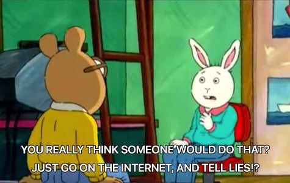

DoesTheDogDie (Solution)
BACK
Puzzle Author: me :D
ANSWERS:
1. NO
2. NATIVIDAD
3. 12.12242ºN, 86.25627ºW

Of course the dog didn't die! This piece was part of Guillermo Vargas's Exposición No. 1 (2003), in which:"1) the sound of a Sandinista hymn played in reverse;
2) an incense burner, burning 175 rocks of crack cocaine and an ounce of marijuana;
3) a sick dog from the streets, tied to a short leash inside the gallery;
4) instructions not to feed or free the dog that the artist named “Natividad”;
5) the text “eres lo que lees” written on the gallery wall in dry dog food;
6) and responses to the exhibition that accumulated (from mass media communications systems, including television, newspapers, Internet blogs, cell phones, texting, YouTube, etc) during the three-day installation"
During these three days, during which Vargas and the Gallery received countless threats, Natividad was cared for and fed by the artist and was only tied up during the gallery hours, after which it was released to play in the back yard until it escaped.
This isn't much of a solution, but given all of the outrage about this art piece, it shouldn't have been too hard!